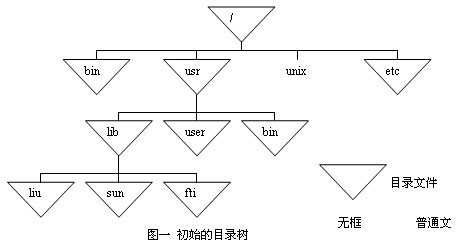

一、实验目的
操作系统是计算机系统的一个重要系统软件，本课程通过实验，希望学生了解实际操作系统的工作过程，在实践中加深对操作系统原理的理解。
二、实验内容和要求
操作系统实验分为两类：Linux和Windows，每类实验包含四组实验，每个(组)同学选做一类实验，并完成该类中全部四组实验。Linux实验包括“Yalnix Shell”、“虚拟存储”、“作业控制系统”、“文件系统操作”或“模拟文件系统”（后面两个实验选做一个）。Windows实验包括，“生产者消费者问题”、“Windows虚拟存储器管理”、“NDIS协议驱动程序的分析与改进”、“虚拟磁盘的文件系统驱动程序设计”。
序号：Windows1
实验名称：生产者消费者问题
学时：10
实验目的和要求：掌握基本的同步互斥算法，理解生产者和消费者模型
实验类型：综合实验
序号：Windows2
实验名称：Windows虚拟存储器管理
学时：10
实验目的和要求：了解Windows 2000/XP的内存管理机制，掌握页式虚拟存储技术
实验类型：综合实验
序号：Windows3
实验名称：NDIS协议驱动程序的分析与改进
学时：15
实验目的和要求：使得学生可以通过这样的实际编程工作对驱动程序有一个感性的认识，并作为对此类驱动程序开发的入门学习
实验类型：综合实验
序号：Windows4
实验名称：虚拟磁盘的文件系统驱动程序设计
学时：15
实验目的和要求：掌握文件系统驱动程序体系结构原理和程序设计方法
实验类型：综合实验
序号：Linux 1
实验名称：Yalnix Shell
学时：10
实验目的和要求：使用Posix API，来管理进程、会话、信号、管道和进程间通信
实验类型：综合实验
序号：Linux 2
实验名称：虚拟存储
学时：10
实验目的和要求：了解Linux是如何实现虚拟存储管理
实验类型：综合实验
序号：Linux 3
实验名称：作业控制系统
学时：15
实验目的和要求：体会作业控制系统的实现原理和技术
实验类型：综合实验
序号：Linux 4（1）
实验名称：文件系统操作
学时：15
实验目的和要求：了解有关Linux文件管理的知识，设计一个简化的文件系统并实现一组操作。
实验类型：综合实验
序号：Linux 4（2）
实验名称：模拟文件系统
学时：15
实验目的和要求：通过模拟Linux或者Unix下的目录结构，体验文件系统的设计原理，并了解如何提供对文件及目录的操作
实验类型：综合实验
第一部分 WindowsNT 和 Windows 2000实验
实验一
实验名称：生产者消费者问题
实验目的：
实验描述：
在Windows 2000环境下，创建一个控制台进程，在此进程中创建n个线程来模拟生产者或者消费者。这些线程的信息由我们在本程序定义的“测试用例文件”中予以指定。该文件的格式和含义如下：
3
1 P 3
2 P 4
3 C 4 1
4 P 2
5 C 3 1 2 4
第一行说明程序中设置几个临界区，其余每行分别描述了一个生产者或者消费者线程的信息。每一行的各字段间用tab键隔开。不管是消费者还是生产者，都有一个对应的线程号，即每一行开始字段那个整数。第二个字段用字母P或者C区分是消费者还是生产者。第三个字段表示在进入相应线程后，在进行生产和消费动作前的休眠时间，此以秒计；这样做的目的是可以通过调整这一列参数，控制开始进行生产和消费动作的时间。如果是代表生产者，则该行只有三个字段。如果代表消费者，则该行后边还有若干字段，代表要求消费的产品所对应的生产者的线程号。所以务必确认这些对应的线程号存在并且该线程代表一个生产者。
所有实验所用资料，可以在“操作系统实验指导”一书中获得。
实验要求：
需要设计一个并发程序完成生产者消费者之间的同步。
最后必须提交：
实验二
实验名称：Windows虚拟存储器管理
实验目的：
实验描述：
所有实验所用资料，可以在“操作系统实验指导”一书中获得。
实验要求：
通过本实验，要求学生能够了解在Windows 2000 / Windows XP系统中如何控制虚存空间。具体的要求如下：
最后必须提交：
实验三
实验名称：NDIS协议驱动程序的分析与改进
实验目的：
使得学生可以通过这样的实际编程工作对驱动程序有一个感性的认识，并作为对此类驱动程序开发的入门学习
实验描述：
所有实验所用资料，可以在“操作系统实验指导”一书中获得。
实验要求：
最后必须提交：
实验四
实验名称：虚拟磁盘的文件系统驱动程序设计
实验目的：
实验描述：
认真阅读《windows 内核实验教程》 P192 – P212.
实验要求：
设计目标是用硬盘上的文件模拟一个磁盘驱动器，使虚拟盘能够像实际的的磁盘一样进行工作，能够在虚拟盘进行格式化以创建文件系统,在虚拟盘上进行各种文件与目录操作。
要求分发例程包括VirtualDiskCreate，VirtualDiskClose，VirtualDiskRead，VirtualDiskWrite，VirtualDiskDeviceControl.
编写虚拟盘文件系统应用程序,参考P209-P212。
编写程序结构说明文档,和应用程序使用文档。
最后必须提交：
第二部分 Linux实验
实验一
实验名称：Yalnix Shell
实验目的：
实验描述：
所有实验所用资料，可以在Systems Programming Practice: The Yalnix Shell中获得。
实验要求：
你需要完成一个命令解释器，也就是为Linux开发一个简单的shell，这个shell不要求实现商业版本中复杂的功能。但要允许用户执行程序，要有作业控制功能，要实现管道和I/O重定向。
最后必须提交：
实验二
实验名称：虚拟存储
实验目的：
了解Linux是如何实现虚拟存储管理。
实验描述：
与体系结构无关的通用存储模型是所有Linux虚拟存储实现的基础，但是任何特定的实现都依赖于特定的硬件平台。本实验以i386为讨论的基础，了解代码编写细节，修改虚拟存储代码来检测系统缺页错误的发生频率。此外本实验牵涉到系统调用的相关知识，包括学习如何编制一个系统调用并通过往内核中增加函数使得在内核空间中可以对用户空间进行读/写。
实验要求：
最后必须提交：
实验三
实验名称：作业控制系统
实验目的：
实验描述：
实现一个多进程的作业控制系统，用户可以完成如下操作，提交自己的作业，让系统调度运行；将已提交的作业移出；查看作业的状态。为了简便起见，假设每个用户最多能提交1个作业，系统中只有2000个用户。
实验要求：
系统应包括如下几个部分， scheduler，作业的调度者；enq，作业入队命令；deq，作业出队命令；stat，作业状态查看命令。
最后必须提交：
实验四
可在如下两个实验候选方案中选其一。
《文件管理实验候选一》
实验名称：文件系统操作
实验目的：
了解有关Linux文件管理的知识，设计一个简化的文件系统并实现一组操作。Linux提供的文件管理适于多种不同类型的磁盘文件系统，这些磁盘文件系统的组织结构各异，磁盘格式也不相同。虽然Linux为硬盘提供了自己的文件系统组织结构（ext2），但是文件管理系统可以扩展为在任何文件系统格式上执行。
实验描述：
准备一张fat格式的软盘，在linux下编写一个用户程序，对软盘上的文件进行管理，要求提供如下一组函数：
实验要求：
系统应包括上述功能，具体参见“操作系统实验指导”一书。
最后必须提交：
《文件管理实验候选二》
实验名称：模拟文件系统
实验目的：
通过模拟Linux或者Unix下的目录结构，体验文件系统的设计原理，并了解如何提供对文件及目录的操作。
实验描述：
设计实现一个简单的模拟文件管理系统，包括目录文件、普通文件、i结点和存储区，具体要求如下：
其它说明：

http://scse.buaa.edu.cn/news_photo/Image/2006-7/2006072120500593034.jpg
最后必须提交：
实验内容详见http://202.112.138.35
三、教学安排及方式
操作系统实验分组进行，每组最多5人，一共50学时，在学院机房完成。
四、考核方式和评分标准
五、教材和参考书
六、开课教师
任爱华 教授、王雷 副教授